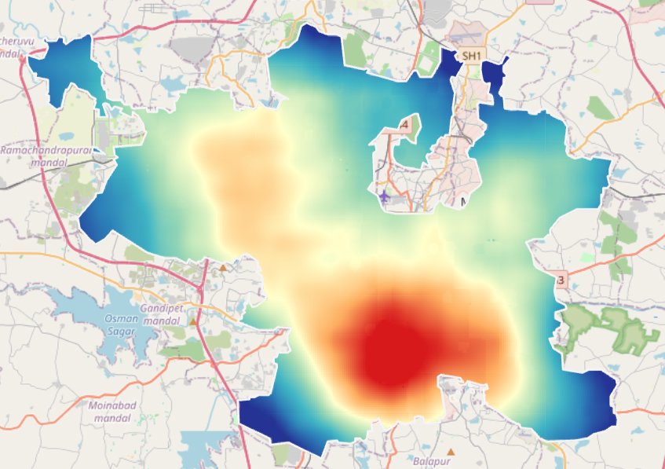
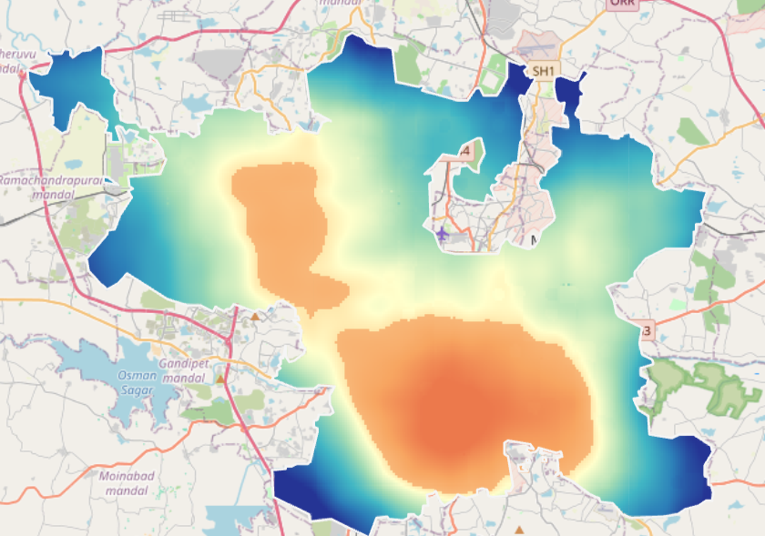
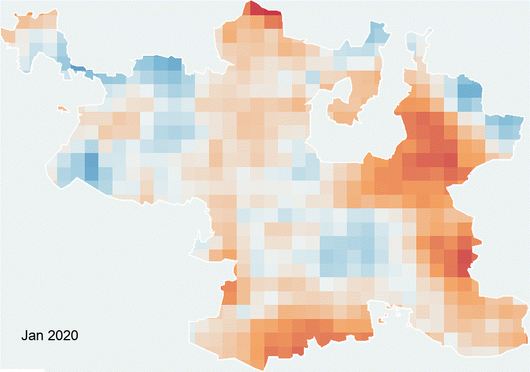

Annual mean absorbing aerosol index

-1.372AAI · unitless · city p2–p98-1.167
Question 2 · Google Earth Engine
Sentinel-5P absorbing aerosol index paired with modeled population aged 0–14 in areas above Hyderabad's own annual AAI threshold.
AAI is a satellite column index. The population overlay counts modeled children residing in mapped high-AAI areas; it does not estimate personal or ground-level exposure.
Modeled citywide population aged 0–14: 1,335,100.


Color scale capped at the 98th percentile; the reported total uses all included cells.
The annual mean AAI across valid GHMC pixels was -1.259 (unitless), and the city-specific 75th-percentile threshold was -1.225. The highest quartile covered 152.1 km², or 25.0% of valid AAI area. The R5 annual map was nearly uniform because its fixed display minimum clipped the observed values, so it could not reliably show where AAI was higher or lower. In the child-population overlay, warm cells appear concentrated in the central-to-southeastern urban area, with a smaller northwestern patch. The overlay indicates the modeled number of children per WorldPop cell within high-AAI areas, not a finer-resolution AAI measurement. About 532,659 of 1,335,100 modeled children (39.9%) fall in those areas. That share exceeds the 25.0% area share, suggesting the high-AAI quartile contains a relatively large portion of the modeled child population; this indicates spatial overlap, not personal exposure or a health effect.
Use the layer control to compare annual AAI, high-AAI areas, and modeled children per population cell.

Monthly Sentinel-5P scene counts range from 410 to 454.
| Month | Mean AAI | Scenes |
|---|---|---|
| Jan | -1.244 | 440 |
| Feb | -1.141 | 410 |
| Mar | -1.227 | 440 |
| Apr | -0.947 | 425 |
| May | -0.841 | 438 |
| Jun | -1.321 | 426 |
| Jul | -1.351 | 454 |
| Aug | -1.215 | 438 |
| Sep | -1.391 | 425 |
| Oct | -1.443 | 440 |
| Nov | -1.463 | 424 |
| Dec | -1.528 | 438 |
The monthly citywide mean ranged from -1.528 in Dec to -0.841 in May. Monthly composites used 410–454 Sentinel-5P scenes. The animation displays each month's pixelwise departure from the annual mean on one symmetric ±0.100 scale, making relative month-to-month differences easier to see. The earlier flat rendering was caused by display clipping: the executed annual mean (-1.259) and Q75 (-1.225) were below the old −1 color minimum, so most annual pixels collapsed to the same endpoint color. These index departures describe satellite-observed variation and do not establish its cause or represent ground-level personal exposure.
Sentinel-5P AAI is a roughly 1.11 km satellite column index of UV-absorbing aerosol signal, not ground-level concentration or personal exposure. Monthly means smooth short-lived events and the city-specific Q75 is a relative threshold, not a health standard. WorldPop age counts are modeled 2020 estimates at roughly 93 m. The coarser AAI classification is transferred to those finer cells, so children are reported as residing in areas with relatively high satellite-observed AAI values. Results also depend on the 2018-vintage GHMC boundary and valid satellite coverage. The continuous S5P display scenes are bicubic-interpolated onto a 150 m grid and WorldPop is interpolated onto a 50 m display grid for smoother rendering. These interpolated grids add no source detail; thresholding and statistics use the original approximately 1.1 km AAI and 100 m WorldPop grids.
The Q75 marks a relative city-specific satellite index range; it is not a health guideline. Population totals are modeled estimates, not observed individual locations. Bicubic interpolation is used only to smooth the displayed raster; it does not add spatial detail beyond the native Sentinel-5P (about 1.1 km) and WorldPop (about 100 m) grids.